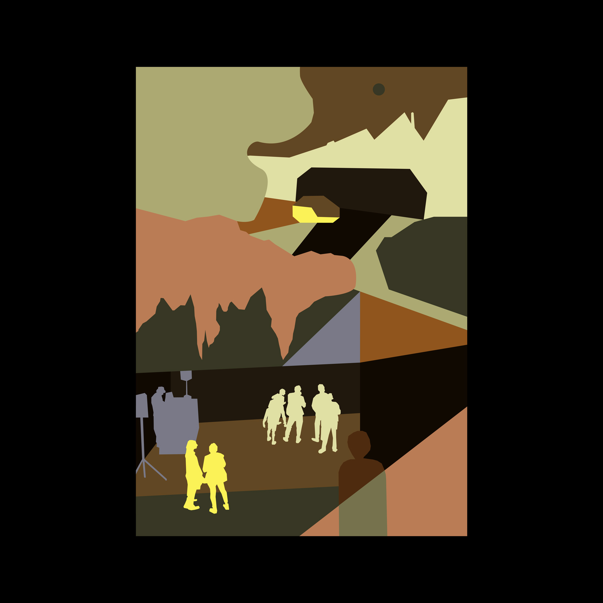
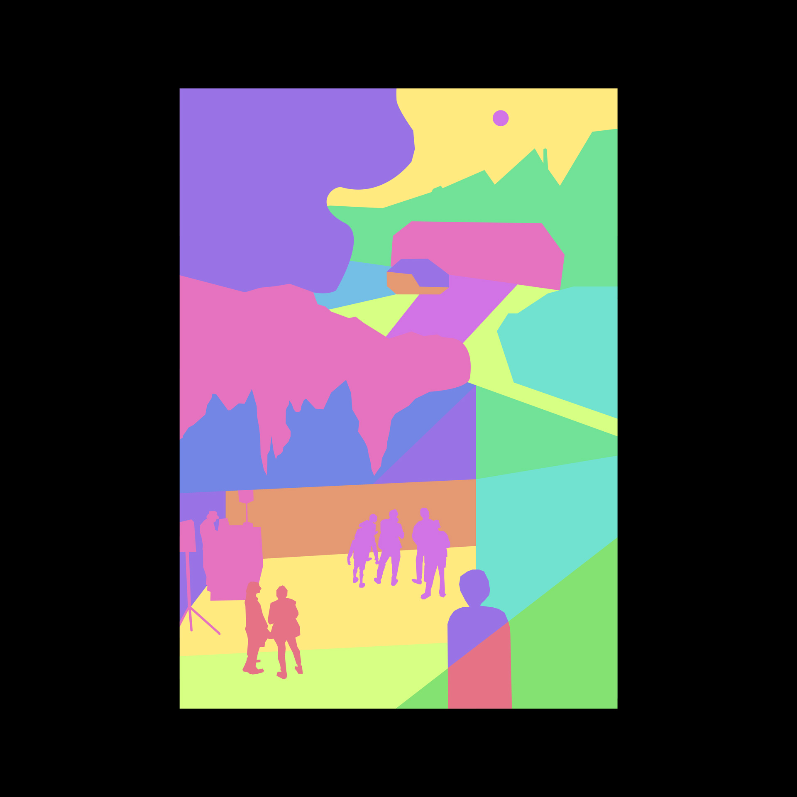
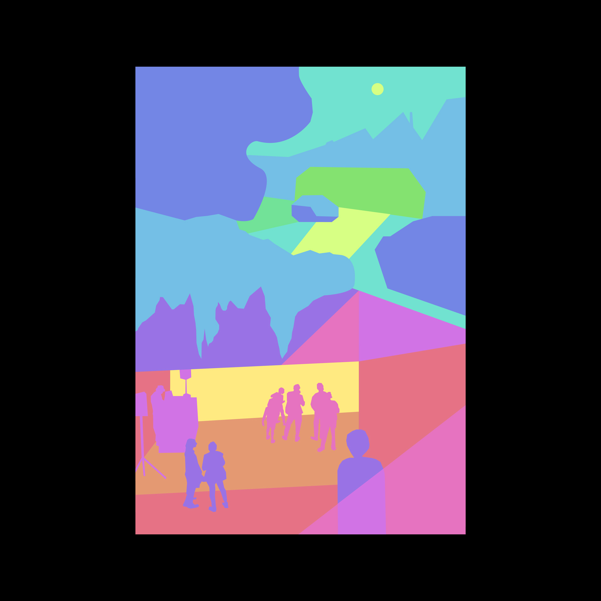

Colour and Perception
I participated in the course “Colour and Perception” by Sini Vihma during my master studies in New Media. In
the course, we did practical exercises with colour paper to get a deeper understanding of colours in the
visual world. I then transferred these practical works and my gained knowledge into the digital world.
Spatial Effect and Illusion
Minimalist illustrations of an urban night scene based on a photo by Lena-Marie Gribl.
First, my aim was to achieve a clear sense of space and depth through the use of the same colours and visual
cues as in my photo reference. I then used exactly the same colour palette but changed the order of colours to
break the illusion of depth. In the other versions, I used vibrant colours of equal saturation and brightness
to explore if and how the image could be perceived differently.





One Color Looks Like Two
In this exercise, I aimed to create optical illusions by making one colour look like two. I achieved the
effect by surrounding one colour with two different background colours. I tried several combinations and
concluded that the effect is strongest when choosing a light and dark background colour and a colour for the
inner square of brightness in between the two backgrounds. This worked for chromatic, analogous, and even
complementary colours.

Year
2023
Type
Colour Study
Software
Illustrator
After Effects